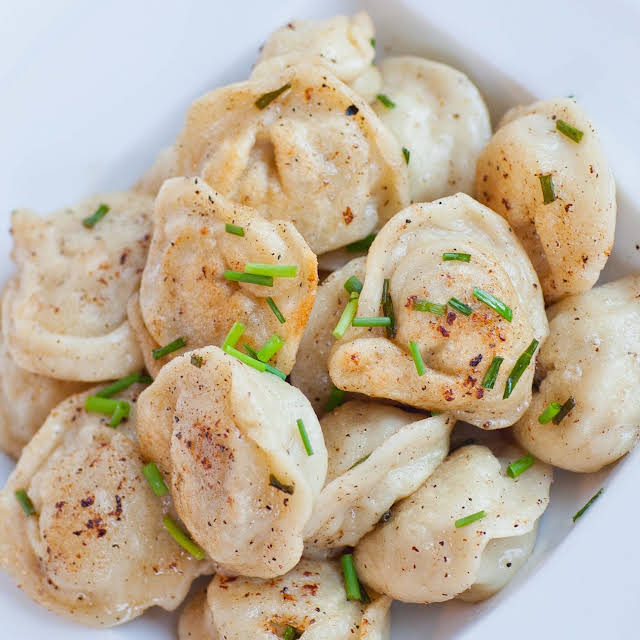

Pelmeni
home

Description
Pelmeni are the Russian version of tortellini, typically
filled with a ground meat such as pork, beef, lamb, or
even potato. A favorite dish of many Russians, this
recipe is very simple and delicious. It takes a little
bit of practice and time to put together the pelmeni
but it’s well worth the effort! Serve the pelmeni
with sour cream and dill, or enjoyed them fried with onions!
Ingredients
Dough
- 2 large eggs
- 1 1/3 cups water
- 1/2 teaspoon salt
- 4 cups flour
fillings
- 1/2 pound ground pork
- 1/2 pound ground beef
- 1 onion (large, pureed)
- 5 garlic cloves (pureed)
- 2 teaspoons sea salt
- 1 teaspoon ground black pepper
dressing
- 1/3 cup sour cream
- 2 tablespoons white wine vinegar
- 1 bunch fresh dill (chopped)
- ground black pepper
Directions
- To make dough, whisk together the eggs, water and salt in large mixing bowl. Add the flour gradually, mixing first with whisk, then a spoon, and then using your hands.
- The dough needs to have a medium firmness and shouldn’t be sticky! Knead the dough on lightly floured surface for about 4 to 5 minutes, until the dough is uniform and elastic. Divide the dough in half and keep covered and let rest for at least 30 minutes.
- Prepare the dough first and let it rest for at least 30 minutes to 1 hour.
- Meanwhile, prepare the filling. Either grate or puree the onion in a food processor and place it into a large bowl. Add the ground pork (and beef, if desired), garlic, salt and pepper. Use your hands to combine the ingredients together, creating a uniform mixture.
- For Making Pelmeni by Hand: roll the rested dough out on floured work surface into large rectangle, to about the thickness of pasta sheets. Use a 1-1/2 inch round cookie cutter and cut as many circles as possible. Place 1½ teaspoons of the prepared filling onto each circle. Using well floured hands, shape the pelmeni by pinching together the seams, forming a semi-circle then bringing the two edges together. Place the prepared prepared pork pelmeni onto a floured pan until you’re ready to cook them.
- For Using Pelmenitsa: if you’re using a form, roll out the dough the same way, until it’s very thin. Cut the dough down to size so it fits over the form with a few inches of extra dough handing off the sides. Add about 1 teaspoon, or as much as will fit, into each form. Place a second sheet of dough over the top, then use a rolling pin to seal the two layers together. Tap the form hard against your work surface and the pelmeni should pop right out.
- To cook ravioli, heat a large pot of well-salted water to boiling. Cook ravioli in small batches for about 8 minutes. Remove them with slotted spoon and place them into bowl.